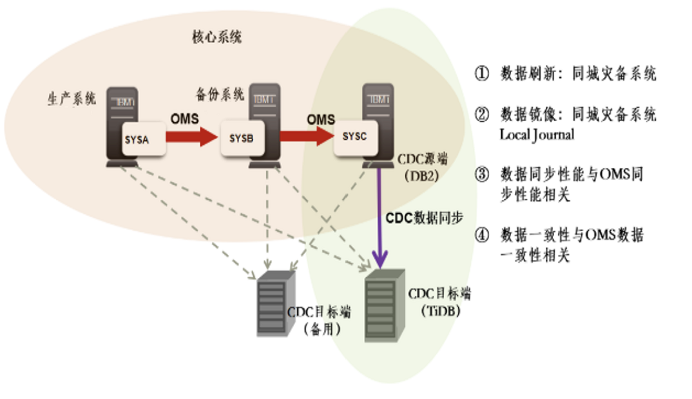
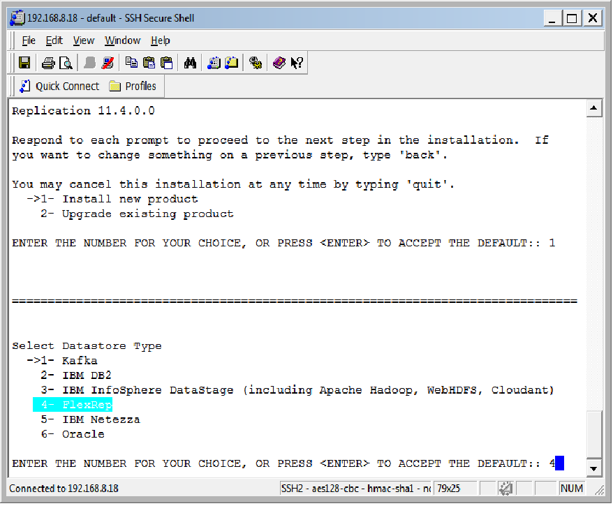
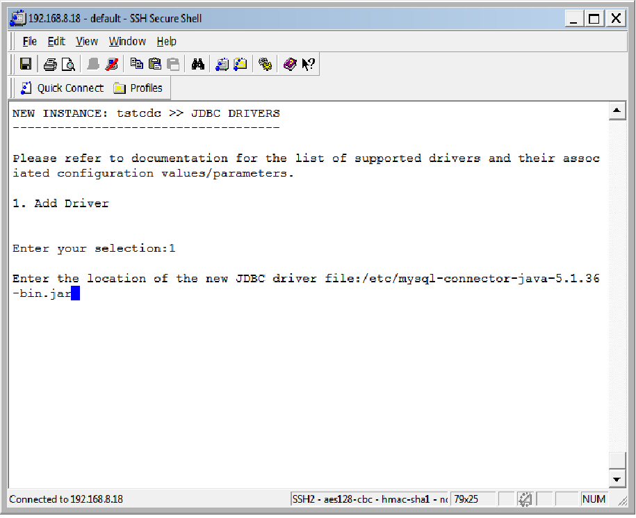

Db2 到 TiDB （CDC）
在数据同步场景中，上游数据库可能是任何关系型数据库，异构数据库之间的同步目前还没有一款通用的工具能够很好的适配所有的关系型数据库。异构数据库之间的同步也有比较多的数据同步工具。传统数据库市场中， Db2 有一定的占有率，当这些用户在考虑数据迁移到 TiDB 上时如何选择合适的工具是本章的主要内容。Db2 根据运行平台的不同被分为 Db2 for LUW、Db2 for i（AS/400）、Db2 for z/OS（Mainframe） 。当数据源是 Db2 for LUW 时，可以使用 IBM CDC 或 OGG 做同步工具；当数据源是 Db2 for i 或 Db2 for z/OS 时，只能用 IBM CDC 做同步工具。本章节描述的是 Db2 for i 作为数据源时，使用 CDC 同步数据到 TiDB 的案例，可供所有计划使用 IBM CDC 工具同步数据到 TiDB 的用户参考。
IBM 公司为 Db2 的数据同步做了一套完整的工具，初期这款工具被命名为 InfoSphere Data Replication 简称 IIDR ，IIDR 有多个引擎，包括 Change data capture (CDC) Replication 、 Q Replication 和 SQL Replication ，在 Db2 for i 同步数据到 TiDB 的场景中，主要用到的是它的 Change data capture (CDC) Replication 引擎，所以文中前面提到的 IBM CDC 等价于 IIDR。
CDC 简介
- IIDR-CDC 是一种数据库复制解决方案，它捕获源数据库发生的更改，并将其交付给目标数据库或消息队列中。它的表映射关系的配置都是由图化的控制管理平台上完成的。 CDC 可以用在对源系统几乎没有任何影响的前提下捕捉数据变更并快速应用到下游。其架构特点如下
其软件架构如下图所示：

- CDC 官方支持列表 参考：https://www.ibm.com/support/knowledgecenter/SSTRGZ_11.4.0/com.ibm.cdcdoc.sysreq.doc/concepts/supportedsourceandtargets.html
| Supported source databases | Supported target databases and middleware applications |
|---|---|
| IBM??Db2? for Linux, UNIX and Windows (LUW) | IBM?Db2 for Linux, UNIX and Windows (LUW) |
| IBM?Db2 for i | IBM?Db2 for i |
| IBM?Db2 for z/OS? | IBM?Db2 for z/OS |
| IMS | IBM?InfoSphere? DataStage? |
| Microsoft SQL Server | Microsoft SQL Server |
| Oracle | CDC Replication Engine for FlexRep |
| Sybase?1 | Netezza? |
| Informix??1 | Oracle |
| Db2 on Cloud?(formerly dashDB? for Transactions)?2 | Sybase?1 |
| VSAM | Informix?1 |
| PostgreSQL | CDC Replication Engine for Event Server?1 |
| Db2 Warehouse on Cloud?(formerly dashDB for Analytics)?3 | IBM Cloudant? |
| Db2 Warehouse?(formerly dashDB Local)?3 | Apache? Hadoop |
| MySQL | Apache Kafka |
| Db2 Warehouse on Cloud?(formerly dashDB for Analytics) | |
| Db2 on Cloud?(formerly dashDB for Transactions)?2 | |
| Db2 Warehouse?(formerly dashDB Local) | |
| IBM MQ for z/OS (using Classic CDC for z/OS) | |
| Teradata | |
| Microsoft Azure SQL Database | |
| Microsoft Azure SQL Database Managed Instance | |
| IBM Integrated Analytics System |
- 由于在官方列表中并没有列出 TiDB ，但是它可以选择 CDC Replication Engine for FlexRep 这种方式支持 JDBC 引擎，因为 TiDB 兼容 MySQL 协议，同时 MySQL 也提供了 JDBC driver，所以这里可以使用它将数据写入到 TiDB 中。
- CDC 在实例配置时可以选择支持 datastage type，选择 FlexRep 后再配置 JDBC driver 驱动后就可以成功向 TiDB 中同步数据。
数据同步
下面我们以一个实际案例来介绍如何将 Db2 for i 中的数据同步到 TiDB 上。
部署架构

以上图的生产环境架构为例，上游是一个核心系统，使用的是IBM商业平台，生产和备份平台之间使用了 OMS 同步，IIDR 同步的源端为备机数据库，目标端为 TiDB 。为保证高可用，在下游的另外一台服务器上部署了 IIDR 软件作为备用节点。
关键参数和配置项
关于 IIDR 的部署安装大家可以参考官网，本文不做重点介绍。这里主要说明一下 IIDR 的下游为 TiDB 时，在部署和使用过程中需要注意的点。
- IIDR 安装选项选择 FlexRep
因为 TiDB 并不在 IIDR 官方的支持列表中，所以在下游安装时，我们要选择 FlexRep 如下图所示：

- 创建预定需要借助 MySQL 驱动
IIDR 需要借助 MySQL 驱动通过 JDBC 的方式将数据写入 TiDB 中，需要提前下载 MySQL 驱动，并在创建订阅时选择该驱动，如下图所示：

- IIDR 下游软件参数配置
| 参数 | 值 |
|---|---|
| convert_not nullable_column | true |
| events_max_retain | 10000 |
| global_conversion_not_possible_warning | false |
| global_max_batch_size | 25 |
| global_shutdown_after_no_heartbeat_reponse_minute | 10 |
| Implicit_transformation_warning | true |
| jdbc_refresh_commit_after_max_operation | 4000 |
| Mirror_commit_after_max_operations | 4000 |
| Mirror_global_disk_quota_gb | 9223372036854775807 |
| Mirror_interim_commit_threshols | 100 |
| Userexit_max_lob_size_kb | 2097151 |
| Mirror_commit_on_transaction_boundary | False |
- 数据类型转换对照表
IIDR 在同步全量数据之前，需要在 TiDB 侧创建好表结构，下表是 Db2 for i 到 TiDB 时表字段对应关系：
| Db2字段类型 | TiDB字段类型 |
|---|---|
| L | date |
| T | time |
| Z | timestamp(6) |
| A | varchar |
| P | Decimal |
| S | decimal |
| O | varchar |
使用限制
- CDC 是基于解析 Db2 的日志发现并捕获数据变化，调用的是 Db2 的日志解析的接口，所以只有数据库操作写了事务日志，才能同步到下游 TiDB，类似 load、alter table xxx activate not logged initially 之类的都不会被同步。
- CDC 在安装配置时，在选择 datastage type 时必须选择 FlexRep 才能顺利的将数据同步到 TiDB 中。
总结
IIDR 是一款能够比较好的将 Db2 for i 的数据同步到 TiDB 的工具，在同步过程中如遇到上述配置还解决不了的问题，请联系 IIDR 官方或者 TiDB 官方，具体问题具体分析解决。